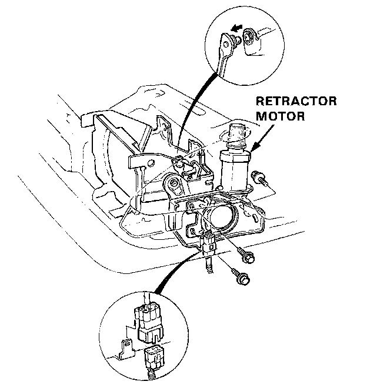
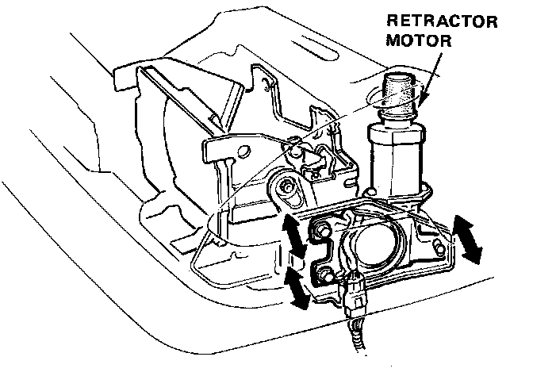

Headlamp Motor: Service and Repair
Retractor Motor Replacement
1. Disconnect the ground wire from the battery negative (-) terminal stud.
2. Remove the headlights.
3. Pry the retractor linkage off the motor arm.
4. Disconnect the 6-P connector.

5. Remove the 3 mount bolts and the retractor motor.

6. Install in the reverse order of removal, and:
- Make sure there is no interference between the wire harness and linkage.
- Coat the joints with grease and make sure the linkage moves smoothly.
- Adjust the retractor motor fore or aft until the headlight doors fit flush with the front fender when the headlights are closed.